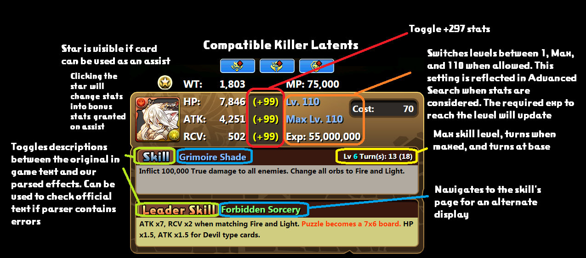
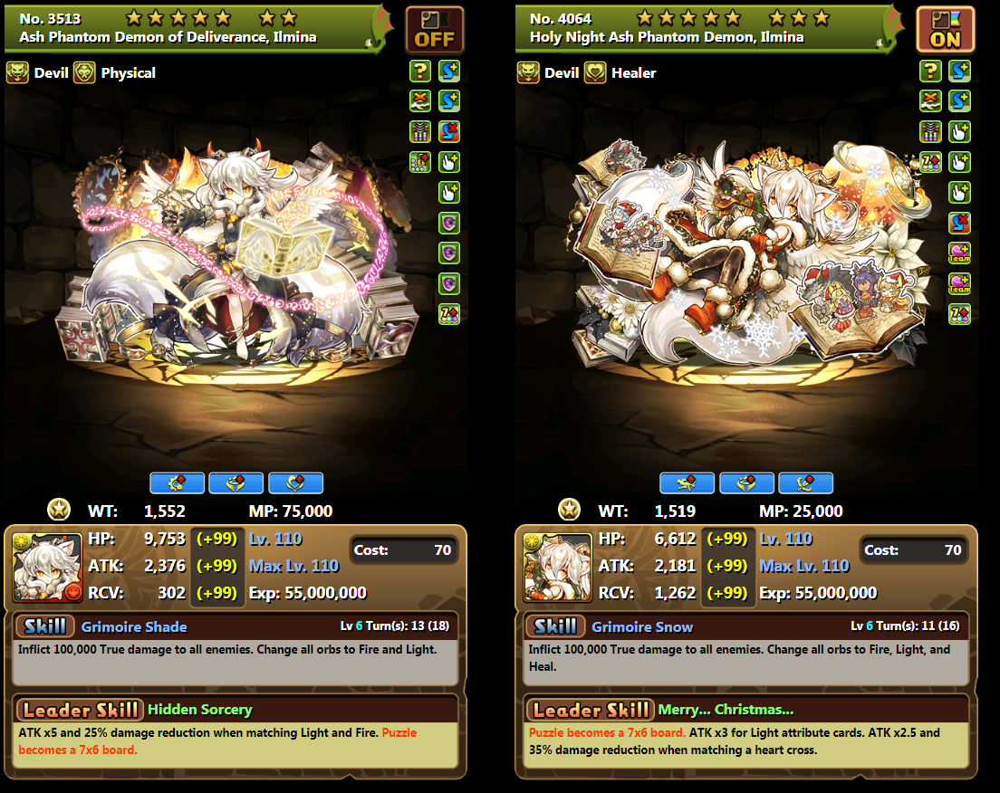
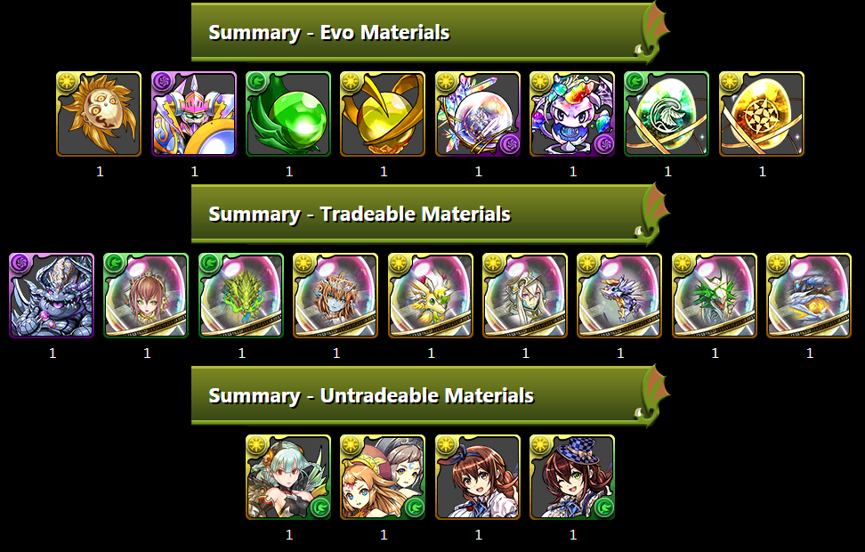

Fuzzy Search is the default search from the main page. You can identify it by the fuzzy search icon being on.

Fuzzy Search allows you to search the monsters by name and number if you already know what you are looking for and just want to get to its card page.
In addition, Fuzzy also supports certain prefixes to narrow down further such as colour, rarity, certain collabs/seasonals, and some common abbreviations/nicknames such as “revo” for “reincarnated”.

Advanced search is accessed by clicking the Fuzzy Search icon to toggle it off.

The page itself is labeled for instructions of use. Advanced allows you to more specifically refine your search to consider many parts of a card, including its stats, awakenings, and active/leader skills. A small number of skills are still in progress for more specific searches, but the majority allow for further narrowing. Advanced search can be used to find cards that fit your needs more exactly, for example, finding blue dragons with FUA and 7c awakenings (including Super Awakenings), or finding inheritable actives that unlock the board and do a full board change including light but contains at most 3 colours and not taking longer than 10 turns.
While fairly straightforward, there are certain areas that are clickable.
Favouriting will keep a card pinned so you can compare cards side by side if you navigate to another page. If your screen resolution is not high enough, however, they will display vertically instead.
Clicking on any awakening from this screen will take you to a page showing cards with the awakening, organized by count. It accounts for super awakenings in its own headings to easily differentiate which ones are only usable in solo mode. Clicking a voice awakening, however, will instead play the card’s NA region voice clip.

Both these areas are clickable and have useful functions.

The evolution tree displays a customizable tree of materials needed to make the card. You can manually click each node to expand it to its own evo mats. Collapsing what you already own and expanding what you do not can exactly create your own tree.

A summary of the displayed tree is located at the bottom of the page.
The Uses page displays any cards that either evolves from or uses your card as an evo material. It continues this for anything following, to show a full listing of any card it is involved in making.